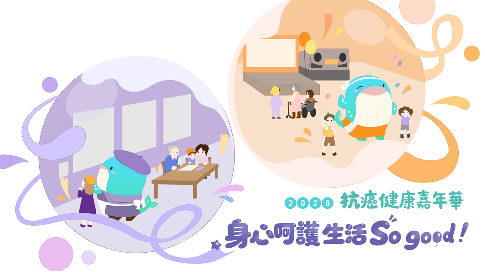

01 / THE WORKSHOP
每一點星光，
都是一個起點。
從身邊的小問題出發，
做出值得慢慢探索的產品。

FRIENDS OF THE CLUBHOUSE
夥伴活動精準健康
嘉年華 2026
2026.10.17 — 10.18
松山文創園區 · 第 2、3 號倉庫
主辦｜CancerFree Biotech 精拓生技
前往活動官網 ↗02 / ON THE MEMORY WALL
想法，也在對話中長大。
TUNE IN / PODCAST
病了才知道
健康知識，不必等到生病才知道。每週與醫師、營養師和健康專家聊聊，把複雜的事說清楚。
03 / ALWAYS CURIOUS
把好奇，變成
可以走進去的世界。
Skyeblock 是一間以好奇心為起點的創意工作室。我們在健康、學習與探索之間，設計數位產品、內容與體驗，讓複雜的事更容易理解，也讓值得被看見的想法真正發生。
一起聊聊 ↗